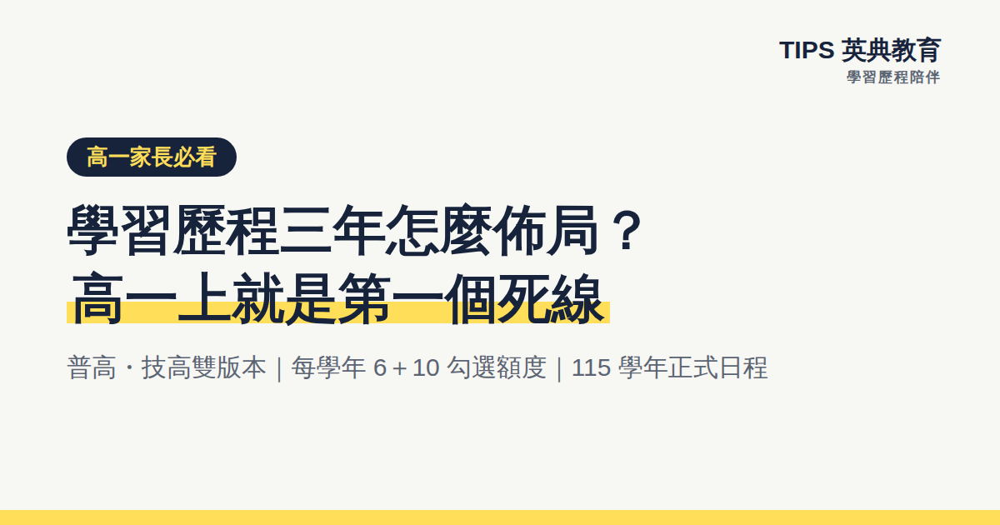

學習歷程高一家長必看：學習歷程三年怎麼佈局？
重點摘要
課程學習成果只能在修課當學期上傳＋老師認證，逾期無法補件——學習歷程從高一上就開始計分。每學年可勾選課程成果 6 件、多元表現 10 件；普高個申各系至多參採 3＋10 件，技高四技甄選件數各系自訂。本文以 115 學年正式時程給出普高、技高三年佈局地圖，與家長可以做的五件事。
課程學習成果只能在修課當學期上傳＋老師認證，逾期無法補件——學習歷程從高一上就開始計分。每學年可勾選課程成果 6 件、多元表現 10 件；普高個申各系至多參採 3＋10 件，技高四技甄選件數各系自訂。本文以 115 學年正式時程給出普高、技高三年佈局地圖，與家長可以做的五件事。
很多家庭把學習歷程當成「高三的事」，但制度的設計正好相反：課程學習成果只能在修課當學期上傳認證，高一上學期就是第一個死線。這篇給高一（和即將升高一）家長一份三年佈局地圖，普高、技高雙版本，日期用 115 學年的正式時程。
先懂兩條鐵則
- 1當學期原則 課程學習成果必須在修課的那個學期上傳學校平台＋任課老師認證，逾期永遠無法補件；多元表現則免認證、可跨學年補傳。
- 2每學年 6＋10 每學年可勾選課程學習成果至多 6 件、多元表現至多 10 件進中央資料庫。高三時，普高個人申請各系至多參採 3＋10 件；技高四技甄選件數由各系自訂（B-1 專題／實習成果通常至少 1 件）。
普高三年地圖（學測 → 個人申請）
- 1高一：養成隨手存的習慣 課堂報告、學習單當學期上傳＋送出認證；下學期啟動自主學習計畫——這是全國近九成校系採計的多元表現之王（作法見自主學習入門指南）。學年末完成第一次 6＋10 勾選。
- 2高二：拿下個申最愛的素材 探究與實作成果是審查常客，過程紀錄（卡關與修正）比完美結果加分；下學期上 ColleGo! 查目標校系參採項目，回頭補強缺口。
- 3高三：變現 上學期是課程成果最後一個可認證的完整學期；下學期進入正式時程——以 115 學年為例：1 月學測、2/25 成績公布、3/23–25 個申報名、3/31 一階篩選、4/30–5/6 審查資料上傳（三年存貨在這 7 天變現）、5/14–31 二階甄試、6/11 放榜。
技高三年地圖（統測 → 四技甄選）
- 1高一：實習課就是素材庫 實習科目成果（B-1）要記錄實作照片＋操作步驟＋自己的判斷與調整；同步規劃檢定路線（丙級起步、目標乙級，甄選可直接加分）。
- 2高二：專題啟動 專題製作（B-1）是多數科系必採，構想、製作、除錯、成品每個階段都留紀錄；下學期上「四技二專備審資料準備指引平台」查目標系採計項目與件數——各系自訂，差異很大。
- 3高三：決戰甄選 115 學年時程：4/25–26 統測、5/15–21 一階報名、6/1 一階篩選、6/5 起二階備審上傳（截止日各校系自訂，有的只給幾天）、6/13–28 指定項目甄試、7/1 正備取、7/14 統一分發。自製 PDF 的容量上限＝4MB × 件數，臨時壓檔案是高三生的惡夢，平時就要存合規檔案。
家長可以做的五件事
- 1把學校公告的截止日抄進家庭行事曆 各校上傳窗口自訂，通常學期末截止、高三下提前。
- 2每學期問一次關鍵句 「這學期的報告傳了嗎？按送出認證了嗎？」——沒按送出認證的檔案，老師看不到、逾期作廢（詳見編輯中陷阱）。
- 3鼓勵隨手拍、隨手存 活動照片、獲獎紀錄當下就留檔，高三才翻手機一定漏。
- 4陪孩子查一次目標校系 普高查 ColleGo!、技高查四技二專備審指引平台，知道終點才知道存什麼。
- 5把勾選當成每學年的家庭儀式 學年末花一個下午，陪孩子從素材裡挑出 6＋10。
TIPS 的三年陪伴怎麼運作
TIPS 學習歷程陪伴平台把上面這些事變成系統：三年進度儀表板（每學年額度一目瞭然）、30 秒快拍存素材（超過 4MB 自動壓縮）、校內狀態追蹤＋LINE 提醒、AI 反思教練引導孩子寫出有觀點的紀錄（引導提問、不代寫，依教育部規範揭露）。搭配每學期實體上傳工作坊，高一開始存，高三不熬夜。完整介紹見學習歷程陪伴服務。
常見問題
Q1：學習歷程每學年可以勾選幾件？
每學年可從已認證素材中勾選課程學習成果至多 6 件、多元表現至多 10 件進中央資料庫。高三申請時，普高個申各系至多參採 3＋10 件；技高四技甄選件數由各系自訂。
Q2：高一還沒決定志向，需要現在開始存嗎？
需要。課程學習成果只能在修課當學期認證，等高三想補高一的課，系統早已關閉。志向未定不影響累積——先存，高三勾選時才有得挑。
Q3：普高和技高的準備方式一樣嗎？
大方向相同（每學年 6＋10、當學期認證），但普高個申參採固定 3＋10 件，技高甄選件數各系自訂、B-1 專題／實習成果是多數系必採重點——技高生要提早查目標系的規定。
高一開始存，高三不熬夜
加入 LINE 回覆「流程圖」，免費領《學習歷程三年攻略流程圖》（普高＋技高雙版本）；八月也有免費的高一新生家長說明會。
💬 加入 LINE，回覆「流程圖」免費領
📚 了解學習歷程陪伴服務
TIPS 英典教育｜台中市南屯區黎明路一段295號